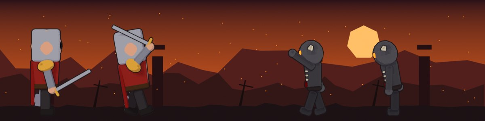
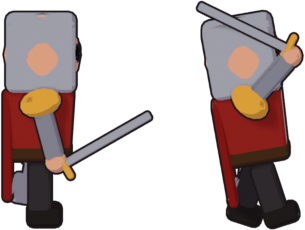
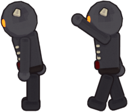
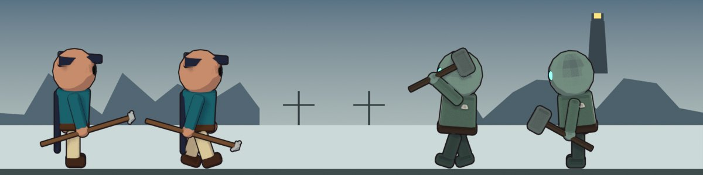
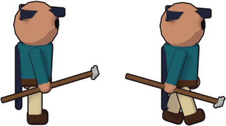
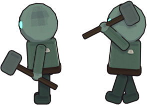
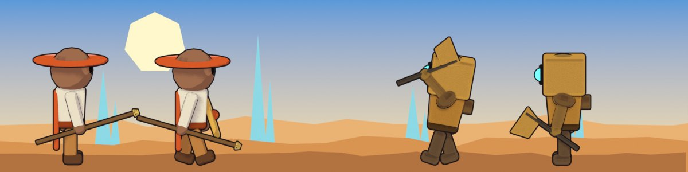
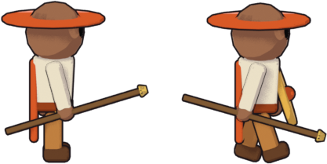
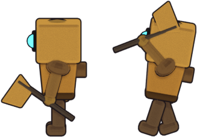

Siegeline: three worlds
Three original settings for the same engine. Each sample hero, enemy and backdrop was built from code in Blender and rendered on the 5070. These are first-pass samples, not final art. Units and enemies are plain data, so switching worlds means new art and names, with no engine changes.
Now playing: Tales of the Brine. On your call the game was re-themed to pirates against monsters of sea folklore (Saltwick Cove, the Gullwake fort, Mother Fathom). Full cast in docs/world-pirates.md. The Ashen Marches below stays available as git tag
My original pick was The Ashen Marches. It fits the tone you asked for (grim, a little gruesome, not horror) and has the strongest silhouettes: armoured soldiers against gaunt, horned husks reads instantly on a small screen. Its ember-dusk palette also gives the most dramatic hits, fire and night-time boss fights. Switching later costs about one night of art and naming. Engine, saves and balance carry over.
ashen-marches-v1.My original pick was The Ashen Marches. It fits the tone you asked for (grim, a little gruesome, not horror) and has the strongest silhouettes: armoured soldiers against gaunt, horned husks reads instantly on a small screen. Its ember-dusk palette also gives the most dramatic hits, fire and night-time boss fights. Switching later costs about one night of art and naming. Engine, saves and balance carry over.
A. The Ashen Marches
Grim ember-dusk fantasy. A border realm buried in ash after a mountain-furnace cracked open.



- Premise
- The Cinder Maw woke and the dead rose as Hollows: ash-skinned husks with ember eyes. The last keeps hold the line with lanterns, because Hollows fear clean flame.
- Player faction
- The Lantern Wardens. Samples: Ashguard (shield wall), Torchbow (archer with burning arrows), Bellringer (support who slows Hollows with a hand bell).
- Enemy factions
- The Hollow Host (swarming husks), the Gilded Tithe (mercenary knights who sell the dead), the Mawborn (furnace beasts and brutes).
- Maps
- Ash plains, ruined watchtowers, burnt chapels, ember-lit mines, and the cracked rim of the Maw.
- What sets it apart
- Light matters. The castle weapon fires burning bolts that leave fire patches. Some stages are at night, where your lanterns reveal the field and Hollows hit harder in the dark.
B. Saltreach
Cold, foggy sea-cliff adventure. Harbour forts against what the tide drags back.



- Premise
- A sunken armada has risen with the spring tides. The free harbours of Saltreach answer with harpoons, nets and cannon.
- Player faction
- The Tideguard. Samples: Netcaster (holds enemies in place), Gaff-hand (fast skirmisher), Powder Monkey (siege bomber).
- Enemy factions
- The Drowned Fleet, the Reef Choir (coral sirens), and Deepwake beasts.
- Maps
- Fog harbours, wrecked piers, lighthouses, kelp flats at low tide.
- What sets it apart
- Tides. The water line rises and falls during a battle, slowing everything in the middle of the field, so timing your sends matters.
C. Glasswind
Blazing desert of glass spires. Sun-priests against a brass machine empire.



- Premise
- A buried brass empire has switched itself back on and is mining the oases dry. The caravan cities of Glasswind fight back with sun-mirrors and lances.
- Player faction
- The Dune Covenant. Samples: Mirror-bearer (beam ranged), Sand Runner (fast flanker), Kiln Golem (heavy).
- Enemy factions
- The Brass Concord, Glass Wraiths, and sand-worm cults.
- Maps
- Dune seas, glass canyons, oasis towns, buried factories.
- What sets it apart
- Heat and sandstorms. Midday overheats machines and storms hide the far field. Bright and readable, but the least grim of the three.